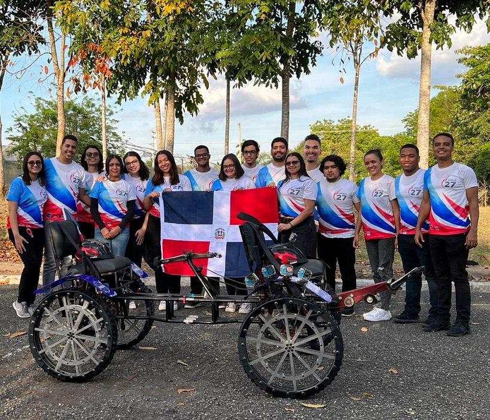

Instituto tecnologico de santo domingo
Las primeras conversaciones sistemáticas que condujeron a la formación del INTEC tuvieron lugar en abril-mayo del año 1971 en la ciudad de Santiago de los Caballeros, cuando un grupo de profesores universitarios tenían la inquietud de crear “una pequeña institución orientada principalmente al ofrecimiento de programas de postgrado en áreas no tradicionales, de programas de educación permanente, de programas para ejecutivos e investigación”.
El 31 de agosto de 1972, movidos por las ideas de cambio que llegaban al país, reconocieron la necesidad de crear un nuevo centro docente "orientado al fortalecimiento de una infraestructura científico-tecnológico-cultural, capaz de sustentar un desarrollo económico y social independiente".
Esta inquietud se materializó con el inicio de las actividades docentes el 9 de octubre de 1972, impartiendo tres programas de postgrado: Ingeniería Industrial, Economía y Administración de Empresas, tras innumerables esfuerzos realizados por el grupo, como la obtención de un préstamo de 900 pesos en la Fundación de Crédito Educativo, de las aulas del Colegio Dominicano de La Salle y de los propios aportes personales, logrando con ello convertir al INTEC en la primera institución del país en ofrecer ese nivel de estudios.
El crecimiento de la matrícula de licenciatura fue lento. Al final del segundo trimestre de docencia se aplicó la baja académica según el Reglamento Académico y quedó fuera del INTEC el 60 % de la población de licenciatura. Este éxodo estudiantil afirmó la imagen de INTEC como una institución con altos estándares de exigencia.
Ya para el año 1980, INTEC ya había consolidado su imagen como institución con vocación de calidad y gozaba de una aceptación generalizada en la sociedad dominicana. La demanda de sus egresados, de las actividades de educación permanente e investigación situaban a INTEC en una posición de liderazgo en la educación superior dominicana.
SANTO DOMINGO. El Instituto Tecnológico de Santo Domingo (INTEC) puso en circulación la memoria de sus 50 años, un documento que recoge los principales hitos de la historia de la universidad, desde su fundación en 1972.
La actividad de presentación se realizó en el Auditorio de la Seguridad Social del campus académico y contó con la participación de autoridades académicas, miembros fundadores, pasados rectores, egresados, así como invitados especiales.

Inspirado por la huella de sus predecesores, el rector del INTEC, Julio Sánchez Maríñez, expresó la importancia de este documento que plasma la esencia del legado del INTEC. “Confío en que cada anécdota y cada relato aquí recogidos sean fuente de enérgica inspiración para el camino que nos falta por recorrer. Entregar este testimonio a las generaciones que vendrán para seguir manteniendo viva la llama de un «se puede», fundamentada en un «se debe»”, indicó.
Las memoria de los 50 años del INTEC fue escrita por Adriana Del Conte, quien compartió su experiencia de plasmar una vida de retos y logros en páginas narrativas.
La memoria institucional hace un recorrido histórico del INTEC y su legado mientras da continuidad a las memorias anteriores, entre ellas la de la primera década del INTEC, escrita por el cuarto rector Rafael Marion-Landais, en 1982. Unos años después, Ida Hernández, en su obra “INTEC: 25 años de historia”, recopiló los principales hitos de la universidad a través de seis capítulos en los que se emplea el género ensayo con un estilo ameno, crítico e íntimo.
INTEC es la universidad dominicana mejor posicionada en el Ranking Mundial QS
El Instituto Tecnológico de Santo Domingo ingresó hoy al prestigioso ranking en la posición 801-1000, de entre 1400 universidades del mundo que fueron evaluadas por la compañía británica Quacquarelli Symonds, encargada de hacer esta clasificación.
SANTO DOMINGO. - El Instituto Tecnológico de Santo Domingo (INTEC) es la universidad dominicana mejor posicionada en el prestigioso Ranking Mundial QS, al que ingresó hoy ocupando la posición 801-1000 de entre las 1400 mejores universidades del mundo que lograron entrar a la clasificación realizada por la empresa británica Quacquarelli Symonds (QS).
La información fue anunciada en el marco del EduData Summit, que se realiza en la sede del Edificio de las Naciones Unidas en Nueva York del 08 al 10 de junio de 2022, evento que organiza cada año QS para premiar a las mejores universidades del mundo.
INTEC obtiene su ingreso al Ranking Mundial QS en el año en que celebra sus cincuenta años de fundación, ocurrida en el 9 de octubre del año 1972. Este hito responde al crecimiento constante que ha tenido la institución en el ranking regional de Latinoamérica en los últimos cinco años (rankeados en el vigente entre las posiciones 181 a 190), así como la tasa de empleabilidad de sus egresados que en promedio de los últimos 3 años es del 95%.
Solo dos universidades dominicanas recibieron su ingreso al Ranking Mundial QS. El ranking completo puede ser consultado a través del portal oficial de la agencia las cuales fueron.
Santo Domingo.- El 96 por ciento de los egresados del Instituto Tecnológico de Santo Domingo (INTEC) se inserta en el mercado laboral antes de cumplirse el año de su graduación, y un 66 % previo a obtener el título.
Los datos fueron obtenidos de la Encuesta de Empleabilidad de Egresados 2021 realizada por la Dirección de Planificación y Calidad y la Unidad de Relaciones con Egresados de esa universidad.
“La historia del país fuera distinta si el 36 por ciento de esos egresados, 12 mil no fueran de ingeniería y lo son, y el 32 por ciento son de negocios. Si miramos la matrícula de educación superior, el 70 % está en cuatro áreas: negocios, humanidades, educación y salud”, refirió el rector, quien afirmó que manejan un presupuesto de un millón de pesos mensual, y pide al Gobierno impulsar unos 26 proyectos que tienen en carpeta. Gastan RD$25 millones en becas con apoyo de otras entidades.
Tras especificar que cuando solo el 8 % se inclina por la ingeniería, un 6 % por la tecnología de la información y un 0.4 % a ciencias básicas, se da un desbalance, entendiéndose que la tecnología debería tener tanto peso como otras áreas.
Intec cuenta con 42 laboratorios, ha obtenido diez patentes e impulsa varios proyectos con apoyo de Fondo Nacional de Innovación y Desarrollo Científico y Tecnológico, pero también se prepara para lanzar al espacio el primer satélite dominicano para estudios del sargazo.